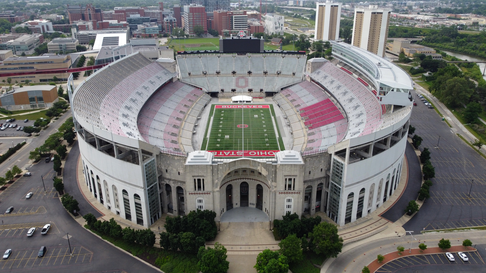

Nossa História
A Ohio State University ( Ohio State ou OSU ) é uma universidade pública
de pesquisa com concessão de terras em Columbus, Ohio , Estados Unidos.
Membro do Sistema Universitário de Ohio , foi fundada em 1870. É uma das
maiores universidades em matrículas nos Estados Unidos, com quase 50.000
alunos de graduação e quase 15.000 alunos de pós-graduação. A
universidade consiste em dezesseis faculdades e oferece mais de 400
programas de graduação e pós -graduação . [ 7 ]
>Nosso departamento de football
O time de futebol americano Ohio State Buckeyes compete como parte da
Divisão I da NCAA Football Bowl Subdivision , representando a Ohio State
University na Big Ten Conference . O Ohio State joga seus jogos em casa
Os Buckeyes são reconhecidos pela universidade e pela NCAA
por terem vencido oito campeonatos nacionais, [ 4 ] incluindo seis dos
principais selecionadores de serviços de notícias: AP Poll e/ou Coaches'
Poll . O programa também conquistou 41 campeonatos de conferência (2 OAC
e 39 Big Ten ), 10 campeonatos de divisão e compilou 10 temporadas
invictas, incluindo seis temporadas perfeitas (sem derrotas ou empates).
